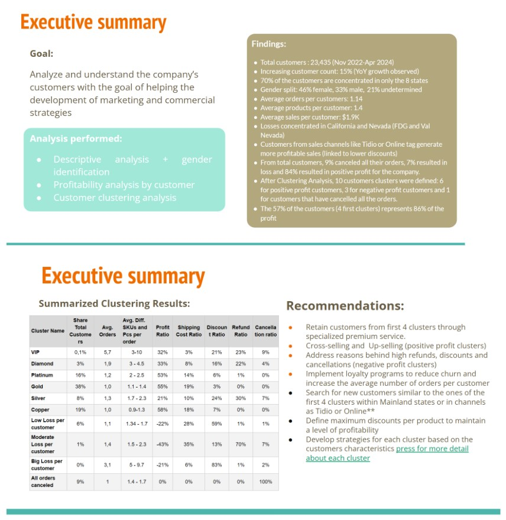

Customer Analysis- Profitability calculation, RFM and Clustering
This project focused on analyzing customer profitability and behavior to enhance marketing strategies. It included customer profiling, gender analysis, cancellation analysis, and profitability assessments. Insights from these analyses were integrated to identify customer segments. Actionable recommendations were provided daily in an easily accessible format for strategic decision-making.
Problem Description
TThe company faced significant challenges in understanding their customers and their behaviors. They lacked crucial insights into which customers were profitable and which were not, as well as the factors that most significantly impacted profitability. This gap in knowledge hindered their ability to make informed strategic decisions. Additionally, there was a need to profile customers based on the results of profitability analysis to tailor marketing and commercial strategies more effectively.
Problem Resolution
The project aimed to bridge this knowledge gap by conducting a series of analyses, which included general descriptive statistics of customers, gender identification and analysis, analysis of customers whose orders were entirely canceled, and a detailed profitability analysis by customer. Furthermore, a customer clustering analysis was performed, integrating insights from the previous analyses. This comprehensive approach allowed the company to segment their customer base effectively. The deliverables included a detailed presentation of the results, providing actionable insights and tailored recommendations that would guide the development of targeted marketing and commercial strategies, ultimately aiming to enhance customer engagement and profitability.
Tools Involved
- Pentaho Data Integration
- Google Big Query
- Google Sheets
- Mongo DB
- Python programming/li>
- Machine Learning/li>